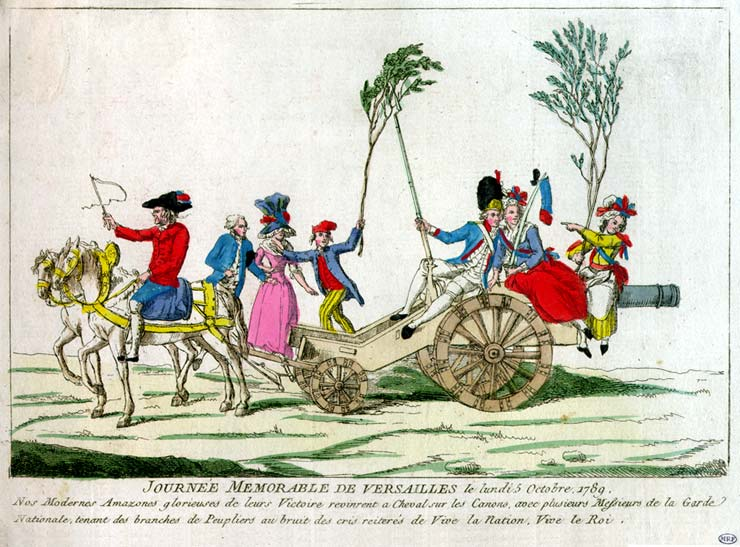

 |
| 6.
Journée mémorable de Versailles, le lundi 5 Octobre 1789.
[Memorable Day at Versailles, October 5, 1789] Caption: Nos Modernes Amazones glorieuses de leurs Victoires revinrent à Cheval sur les Canons, avec plusieurs Messieurs de la Garde Nationale, tenant des branches de Peupliers au bruit des cris réitérés de Vive la Nation, Vive le Roi. Source: Museum of the French Revolution 90.46.129 |